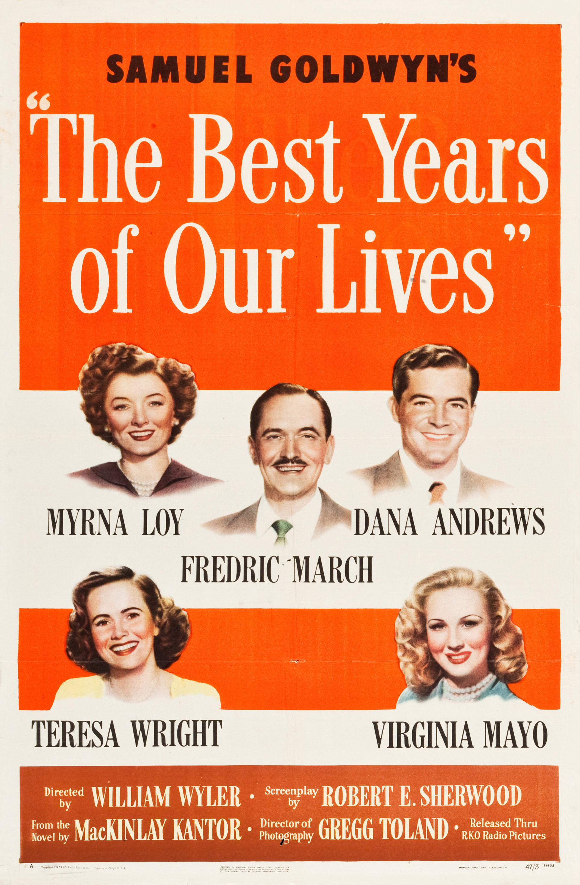

The Best Years of Our Lives
19th Academy Awards
(Oscars 1947)
8 Nominations*, 8 Awards*
| Nominations | ||
|---|---|---|
| Category | Nominees | Result |
| Best Motion Picture | Samuel Goldwyn Productions | Won |
| Actor | Fredric March | Won |
| Actor in a Supporting Role | Harold Russell | Won |
| Directing | William Wyler | Won |
| Writing (Screenplay) | Robert E. Sherwood | Won |
| Film Editing | Daniel Mandell | Won |
| Sound Recording | Gordon Sawyer | Nominated |
| Music (Music Score of a Dramatic or Comedy Picture) | Hugo Friedhofer | Won |
| Special Award | The Best Years of Our Lives | Won |